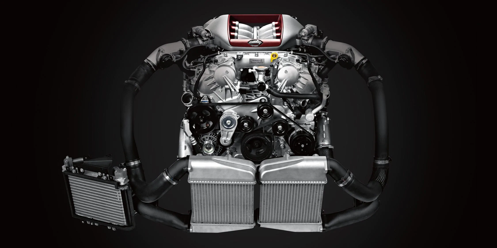

Nissan challenged convention at every point of the Nissan GT-R’s development. Instead of a large, heavy engine thirsty for fuel, the Nissan GT-R is powered by an ideally sized, twin-turbocharged 3.8-L V6 that produces a prodigious 565 hp and equally immense 467 lb-ft of torque. Just as important as the engineering is the actual assembly, which is done by hand by a single master craftsman, whose signature you’ll find on a small but prominent plaque.

13456